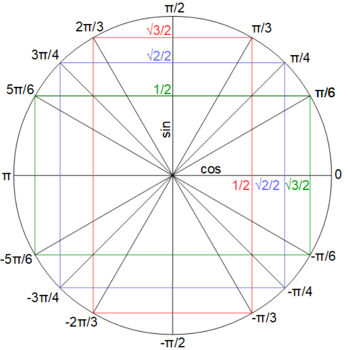

Chapitre 3 : Fonctions trigonométriques
Définition et rappels
- La foncotion sinus, notée \(\sin\) est la fonction définie sur \(\mathbb{R}\) par \(x \mapsto \sin x\).
- La foncotion cosinus, notée \(\cos\) est la fonction définie sur \(\mathbb{R}\) par \(x \mapsto \cos x\).
Ce cercle trigonométrique rassemble certaines valeurs des fonctions sinus et cosinus :
Fonctions péridodiques, paires et impaires.
Graphique des fonctions sinus et cosinus sur l'intervalle \([0,2\pi]\):

Continuité et dérivabilité
Limites de fonctions trigonométriques
Les fonctions sinus et cosinus n'ont pas de limite en \(+\infty\) et \(-\infty\) mais on a les limites suivantes :
- \({\displaystyle \lim_{n \to 0} \frac{\sin x}{x} = 1}\)
- \({\displaystyle \lim_{n \to 0} \frac{\cos x - 1}{x} = 0}\)
Formules de trigonométrie à savoir
| Décalage de \(\pi\) | Réflexion d'axe \(\pi\) | Réflexion d'axe \(\displaystyle \frac{\pi}{2}\) |
|---|---|---|
| \(\cos(\pi + x) = -\cos x\) | \(\cos(\pi - x) = -\cos x\) | \(\cos(\frac{\pi}{2} - x) = \sin x\) |
| \(\sin(\pi + x) = -\sin x\) | \(\sin(\pi - x) = \sin x\) | \(\sin(\frac{\pi}{2} - x) = \cos x\) |
| Formule d'addition | Théorème de Pythagore |
|---|---|
| \(\cos(a + b) = \cos a \cos b - \sin a \sin b \Rightarrow \cos(2a) = \cos^2 a - \sin^2 a\) | \(\cos^2 x +\sin^2 x = 1\) |
| \(\cos(a - b) = \cos a \cos b + \sin a \sin b\) | |
| \(\sin(a + b) = \cos a \sin b + \cos b \sin a \Rightarrow \sin(2a) = 2\sin a \cos a\) | |
| \(\sin(a - b) = \sin a \cos b - \sin b \cos a\) |
Revenir en haut de la page